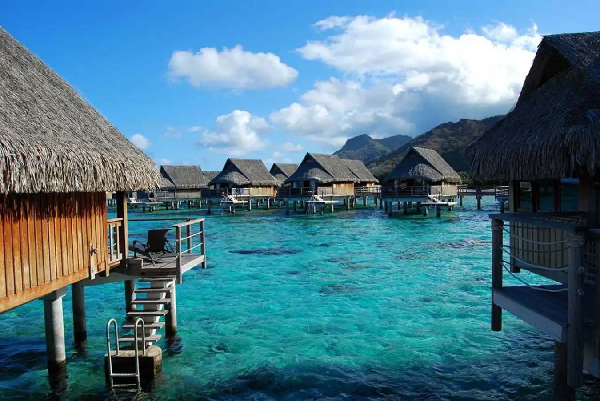

Cộng hòa Fiji, là một quốc đảo nằm ở Nam Thái Bình Dương. Quần đảo này có vẻ đẹp hoang sơ, được ví như thiên đường nơi hạ giới, với đường bờ biển trải dài 1.000 km, gồm 322 đảo lớn và 522 đảo nhỏ. Địa hình của Fiji chủ yếu là đồi núi, bao phủ bởi rừng nguyên sinh nhiệt đới, có hệ sinh thái động thực vật phong phú và đa dạng.
Hai hòn đảo chính của Fiji là Vanua và Viti Levu, nơi có thủ đô Suva và là nơi sinh sống của gần 75% dân số. Thị trấn Nadi ở phía Tây Viti Levu là cửa ngõ quốc tế chính của Fiji và gần các khu nghỉ dưỡng lớn nên thu hút một lượng lớn khách du lịch.
Khi đi du lịch Fiji, du khách sẽ được tản bộ qua những khu vườn bách thảo thơm ngát của Nadi, dạo chơi trên bãi biển và ngắm mặt trời lặn trong đêm. Bạn cũng có thể chợp mắt dưới bóng cây cọ Savusavu hoặc ngâm mình trong hồ bơi của Viti Levu. Khu rừng nhiệt đới tươi tốt và thác nước ở đảo Tamau Uni cũng là một địa điểm lý thú để bạn hòa mình vào thiên nhiên và rời xa những ồn ào nơi phố thị.
